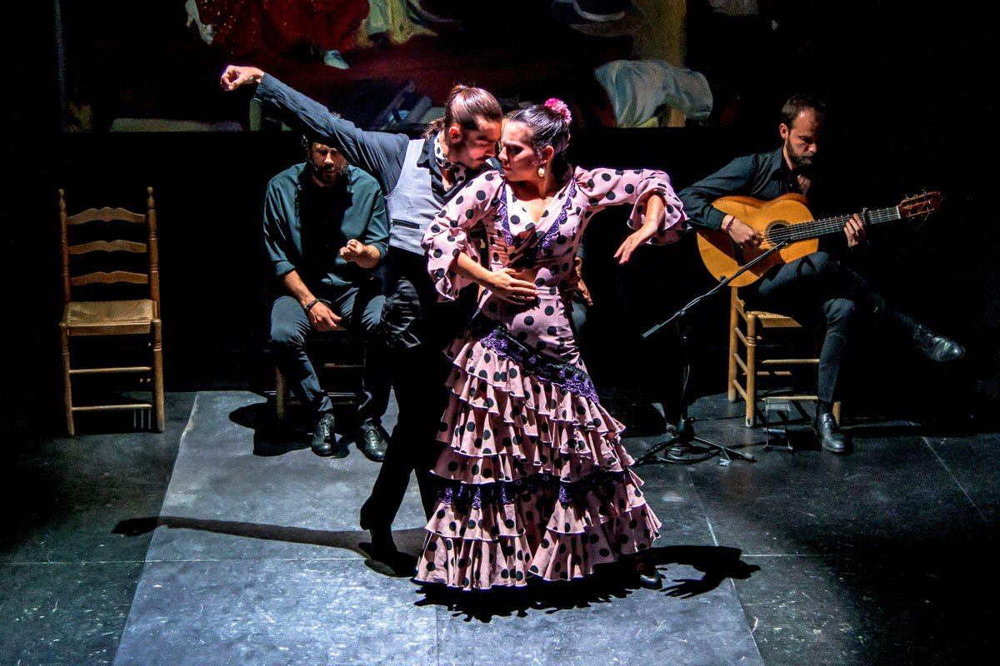

Feel the Soul of Spain: The Flamenco Experience

Feel the soul of Spain through flamenco—not just a dance, but an expression of raw human emotion woven into music, rhythm, and movement.
This passionate art form was born in the heart of Andalusia, southern Spain, and has since become a symbol of Spanish identity and spirit.
During my journey, I was lucky enough to witness a live flamenco performance in Seville, one of the genre's spiritual homes.
The experience was nothing short of electric. The singer’s voice—filled with longing and pride—echoed through the intimate space,
while the guitarist’s rapid strumming added urgency and fire. And then, the dancer appeared. Every stomp of her heel, every dramatic turn,
every clap of her hands spoke volumes—anger, sorrow, celebration, love—all without a single word spoken.
For an equally authentic and mesmerizing experience, Granada offers stunning flamenco shows
in caves in the Sacromonte district, where the acoustics enhance every beat and note.
Whether you're a music lover, a culture enthusiast, or simply seeking a deep connection to Spain's heritage, watching a flamenco show is an absolute must.
It’s not just a performance. It’s an emotional journey, a dialogue
between soul and sound—one that leaves your heart pounding and your spirit stirred.